Construction site progress
Progress monitoring of construction sites is becoming increasingly popular in the construction industry. Especially with the integration of 4D BIM, the progression and quality of the construction process can be better quantified. A key aspect is the detection of the changes between consecutive epochs of measurements on the site. However, the development of automated procedures is challenging due to noise, occlusions and the associativity between different objects. Additionally, objects are built in stages and thus varying states have to be detected according to the Percentage of Completion.
Progress on site: This task can be formulated as a query to determine the ratio of the observed boundary surface area of each object compared to the surface area that can theoretically be observed (Eq.1).
Where a threshold can be used to state which objects are built or not (Eq.2).
In this testcase, we will discuss how to use GEOMAPI to assess progress on a typical BIM-driven construction site. Concretely, we will demonstrate the API’s functionality to:
Preprocess the BIM data from multiple IFC files
Preprocess the various remote sensing data (images, meshes, point clouds) of two measurement epochs
Make a subselection of observable objects
Determine the PoC of the observable objects
Serialize the analysis results
Use the resulting RDF Graph of epoch 1 to support the analysis of epoch 2.
First the geomapi and external packages are imported
%load_ext autoreload
The autoreload extension is already loaded. To reload it, use:
%reload_ext autoreload
%autoreload 2
BIM Model
The dataset that will be used for this analysis is a residential complex that includes 3 seperate buildings and a common underground parking, each of which consists of a seperate IFC file. Fig. 1 shows Building 1 (1192 elements) and the parking dataset (2705 elements). Both datasets depict the construction site structural phase, so the main classes include:
IfcWallStandardCase: 309 + 340 = 649
ifcSlab: 237 + 1150 = 1387
ifcBeam: 200 + 225 = 425
IfcColumn: 95 + 125 = 220
IfcStair: 11 + 10 = 22
Fig.1: Construction site: (red) building 1 and (white) underground parking in seperate IFC files. 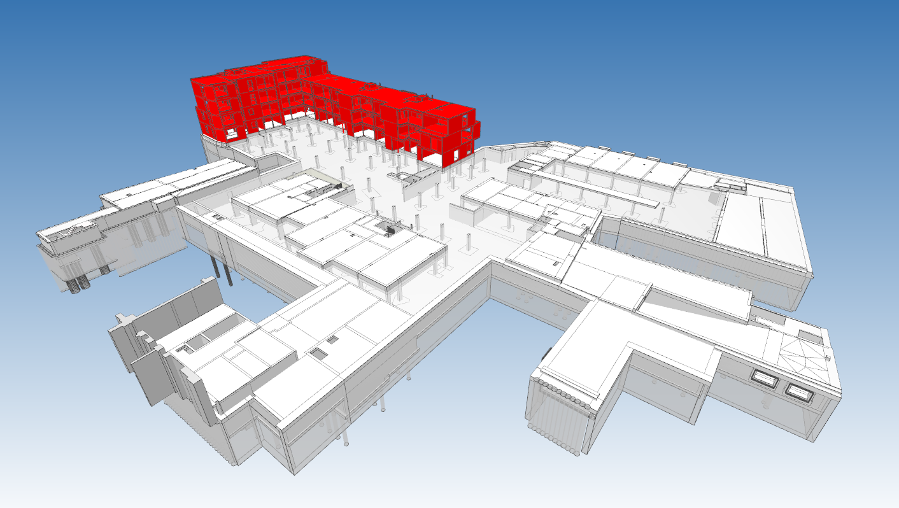
Measurement Epoch week 22
During week 22, a portion of the site was captured with terrestrial laser scanners and hand held imagery. During that period, the ground floor of the parking and structural columns were built, and the farmwork of level 1 was being erected. The following measurements were recorded:
45 10M point scans with a Leica BLK (Fig.2 top left)
715 20MPix Images with a Canon EOS 5D Mark II (Fig.2 top right), resulting in a 240k Mesh (Fig.2 bottom left) and 11M point cloud (Fig.2 bottom right).
Fig.2: (top left) 45 BLK point clouds, (top right) 715 geolocated images, (bottom left) 240k photogrammetric mesh and (bottom right) 11M photogrammetric point cloud.
 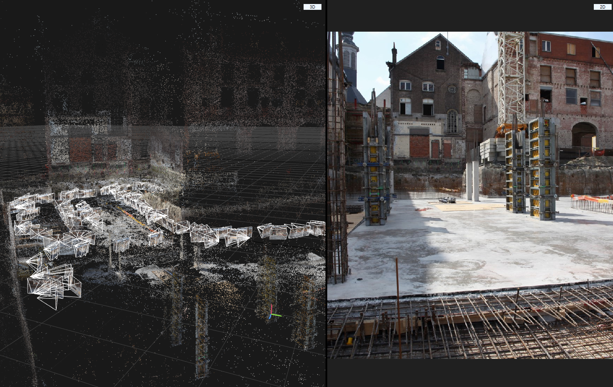
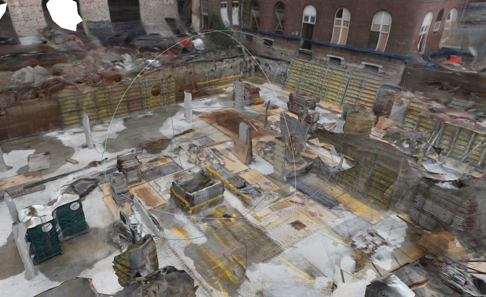
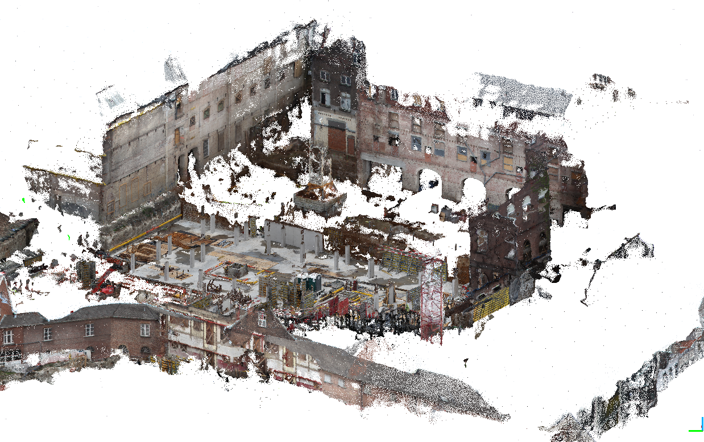
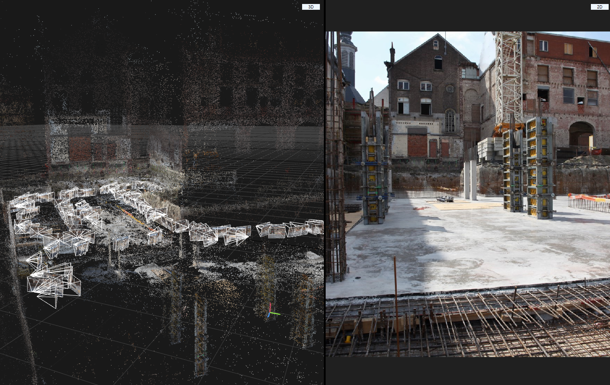
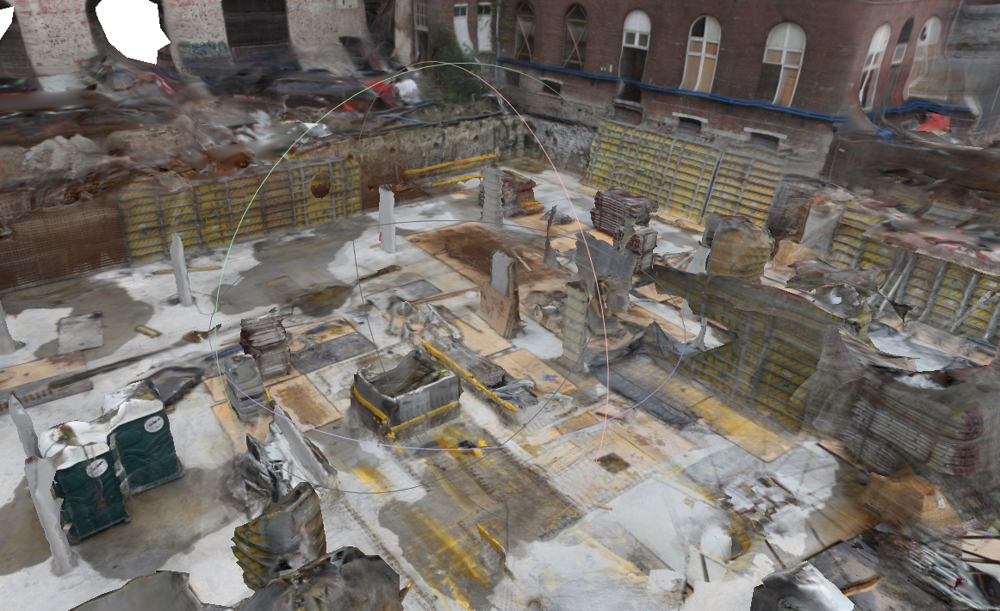
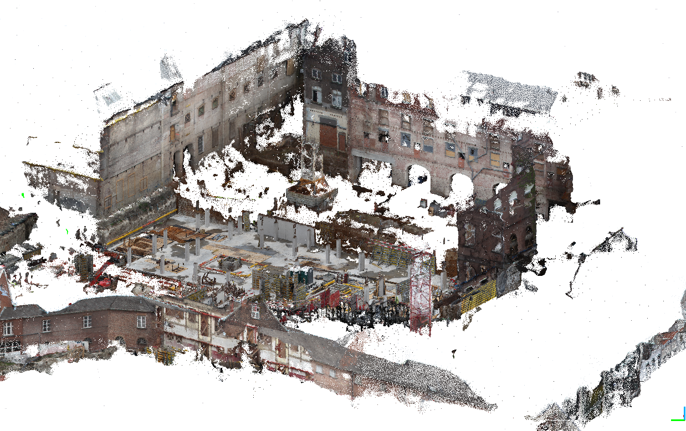
{kind=link}
{kind=link}
{kind=link}
Measurement Epoch week 34
Week 34 is very similar. Ofcourse, some complexities are inherently present such as precipitation, occlusions, rebar, etc. (Fig.3). These objects cause significant amounts of noise, clutter and confusion in any geomatics analysis.
Fig.3: Images of week 34 showing some documentation obstacles on the site including formwork, precipitation, etc.


Preprocessing the BIM Model
Following the GEOMAPI principles, we serialize all relevent objects in the BIM model to an RDF Graph. This includes the structural elements of the classes listed at the top of this document. We could ofcourse list every single object in the IFC but that would unnecessirely complicate the calculations.
ifcPath1=os.path.join(Path(os.getcwd()).parents[2],'test','testfiles','IFC','Academiestraat_parking.ifc')
ifcPath2=os.path.join(Path(os.getcwd()).parents[2],'test','testfiles','IFC','Academiestraat_building_1.ifc')
BIMNodes=[]
For this analysis, we parse the ifc files using all CPU’s.
BIMNodes.extend(tl.ifc_to_nodes_multiprocessing(ifcPath=ifcPath1,getResource=True))
print(len(BIMNodes))
BIMNodes.extend(tl.ifc_to_nodes_multiprocessing(ifcPath=ifcPath2,getResource=True))
print(len(BIMNodes))
2368
3528
It is not uncommon for certain elements to not have geometry or have some invalid meshes. These will yield Geometry Production Errors.
Next, we filter out the types=[‘IfcBeam’,’IfcColumn’] that we wish to evaluate in this testcase.
ifcBeamNodes=[n for n in BIMNodes if 'IfcBeam' in n.className]
print(len(ifcBeamNodes))
ifcColumnNodes=[n for n in BIMNodes if 'IfcColumn' in n.className]
print(len(ifcColumnNodes))
417
220
bimGeometries=[n.resource for n in BIMNodes if n.resource]
o3d.visualization.draw_geometries(bimGeometries + [meshNode.resource])
Fig.4: Images of the IfcBeams and IfcColumn that will be evaluated. 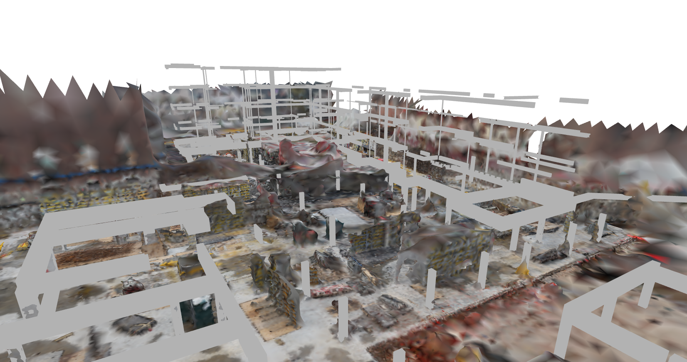
When looking at the instance variables of one of the BIMNodes, it is revealed that GEOMAPI has indeed gathered all the relevant metadata for geomatic analysis of the objects.
{key:value for key, value in BIMNodes[0].__dict__.items() if not key.startswith('__') and not callable(key)}
{'_ifcPath': 'd:\\Scan-to-BIM repository\\geomapi\\test\\testfiles\\IFC\\Academiestraat_parking.ifc',
'_globalId': '31ITCLLef6cxVKsJ1O6alJ',
'_cartesianBounds': array([-7.06959166, -6.29710762, 82.65923323, 94.05945977, 6.3 ,
7.49 ]),
'_orientedBounds': array([[-6.56972877, 82.65931266, 7.52010319],
[-6.29703229, 94.0506375 , 7.48999176],
[-6.56980573, 82.65609109, 6.30066736],
[-7.06958983, 82.67127881, 7.52010312],
[-6.79697031, 94.05938208, 6.27055586],
[-7.06966679, 82.66805724, 6.30066729],
[-6.79689335, 94.06260366, 7.48999169],
[-6.29710925, 94.04741593, 6.27055593]]),
'_orientedBoundingBox': OrientedBoundingBox: center: (-6.68335, 88.3593, 6.89533), extent: 11.3946, 1.21944, 0.500004),
'_subject': rdflib.term.URIRef('file:///282_SF_f2_Rectangular_50_119_966607_31ITCLLef6cxVKsJ1O6alJ'),
'_graph': None,
'_graphPath': None,
'_path': None,
'_name': '282_SF_f2_Rectangular:50/119:966607',
'_timestamp': None,
'_resource': TriangleMesh with 45 points and 78 triangles.,
'_cartesianTransform': array([[ 1. , 0. , 0. , -6.69666565],
[ 0. , 1. , 0. , 88.96377834],
[ 0. , 0. , 1. , 7.01177778],
[ 0. , 0. , 0. , 1. ]]),
'className': 'IfcBeam',
'pointCount': 45,
'faceCount': 78}
We can buffer these geometries on drive so we only have to parse the ifc file once. We can then reload these geometries to assess week 26.
folder=os.path.join(Path(os.getcwd()).parents[2],'test','testfiles','myAnalysisFolder')
if not os.path.exists(folder):
os.mkdir(folder)
for node in BIMNodes:
node.save_resource(os.path.join(folder,'BIM'))
This also sets the path of each node
print(BIMNodes[0].path)
d:\Scan-to-BIM repository\geomapi\test\testfiles\myAnalysisFolder\BIM\Basic_Wall_162_WA_f2_Retaining_concrete_300mm_-_tegen_beschoeiing_903129_0_Z_Q8COz94wZzVDqlx5Ny.ply
Now it is good practice to already serialize these nodes in a RDF graph so we can rapidly load the nodes from the graphs in a next code run. In this testcase, we will store the generated graph in the same location as the buffered mesh geometries.
graphPath=os.path.join(Path(os.getcwd()).parents[2],'test','testfiles','myAnalysisFolder','BIM','bimGraph.ttl')
tl.nodes_to_graph(nodelist=BIMNodes,graphPath=graphPath,save=True)
<Graph identifier=Nd78fbef4e17942d9a0598eb808e0ce3c (<class 'rdflib.graph.Graph'>)>
This sets each BIMNodes’ graphpath and graph. The graph of BIMNodes[0] then looks as follows.
print(BIMNodes[0].graphPath)
print(BIMNodes[0].graph.serialize())
d:\Scan-to-BIM repository\geomapi\test\testfiles\myAnalysisFolder\BIM\bimGraph.ttl
@prefix e57: <http://libe57.org#> .
@prefix ifc: <http://ifcowl.openbimstandards.org/IFC2X3_Final#> .
@prefix openlabel: <https://www.asam.net/index.php?eID=dumpFile&t=f&f=3876&token=413e8c85031ae64cc35cf42d0768627514868b2f#> .
@prefix v4d: <https://w3id.org/v4d/core#> .
@prefix xsd: <http://www.w3.org/2001/XMLSchema#> .
<file:///Basic_Wall_162_WA_f2_Retaining_concrete_300mm_-_tegen_beschoeiing_903129_0_Z_Q8COz94wZzVDqlx5Ny> a v4d:BIMNode ;
ifc:className "IfcWall" ;
ifc:globalId "0$Z_Q8COz94wZzVDqlx5Ny" ;
ifc:ifcPath "..\\..\\IFC\\Academiestraat_parking.ifc" ;
e57:cartesianBounds """[-19.23472973 -12.25564312 65.15487321 90.43620808 3.75
6.45 ]""" ;
e57:cartesianTransform """[[ 1. 0. 0. -15.01948444]
[ 0. 1. 0. 75.43717007]
[ 0. 0. 1. 5.1 ]
[ 0. 0. 0. 1. ]]""" ;
e57:pointCount 26 ;
v4d:faceCount 48 ;
v4d:name "Basic Wall:162_WA_f2_Retaining concrete 300mm - tegen beschoeiing:903129" ;
v4d:orientedBounds """[[-18.94468192 90.47741615 3.75 ]
[-12.25492307 65.15506344 3.75 ]
[-18.94468192 90.47741615 6.45 ]
[-19.23544856 90.40060027 3.75 ]
[-12.54568971 65.07824756 6.45 ]
[-19.23544856 90.40060027 6.45 ]
[-12.54568971 65.07824756 3.75 ]
[-12.25492307 65.15506344 6.45 ]]""" ;
v4d:path "Basic_Wall_162_WA_f2_Retaining_concrete_300mm_-_tegen_beschoeiing_903129_0_Z_Q8COz94wZzVDqlx5Ny.ply" ;
openlabel:timestamp "2022-08-24T09:33:45" .
Note that all path triples in graph are serialized relative to the graphPath so to make it easier to move the entire folderstructure.
Reloading from graph
The above steps only have to be performed once. On reruns of the code or future analysis, we can initialize the same nodes from their serialized triples in the bimGraph. This is significantly faster for smaller graphs for we are serializing over 3500 objects which result in over 40k triples.
graphPath=os.path.join(Path(os.getcwd()).parents[2],'test','testfiles','myAnalysisFolder','BIM','bimGraph.ttl')
BIMNodes=tl.graph_path_to_nodes(graphPath=graphPath,getResource=True)
print(len(BIMNodes))
ifcBeamNodes=[n for n in BIMNodes if 'IfcBeam' in n.className]
print(len(ifcBeamNodes))
ifcColumnNodes=[n for n in BIMNodes if 'IfcColumn' in n.className]
print(len(ifcColumnNodes))
[Open3D WARNING] Unable to load file d:\Scan-to-BIM repository\geomapi\test\testfiles\myAnalysisFolder\BIM\282_SC_f2_Round:Ø30:882687.obj with ASSIMP
[Open3D WARNING] Unable to load file d:\Scan-to-BIM repository\geomapi\test\testfiles\myAnalysisFolder\BIM\282_SC_f2_Round:Ø30:883780.obj with ASSIMP
[Open3D WARNING] Unable to load file d:\Scan-to-BIM repository\geomapi\test\testfiles\myAnalysisFolder\BIM\282_SC_f2_Round:Ø30:883870.obj with ASSIMP
3528
417
220
Analysis week 22
Preprocess measurements week 22
Data data of week 22 (see above) will be imported as part of a SessionNode. This sessionNode contains the individual Nodes of each of the resources and also some general metadata.
First, we parse each set of resources (46 point clouds, 693+ Images and the photogrammetric mesh).
NOTE: This is alot of data, some of which we potentially don’t need as observable objects might not be located within the sensors Field-of-View. GEOMAPI plans for this, and allows Node metadata initialisation from other sources but the actual data such as image metadata files, e57 headers, etc. The actual resources that are needed can be imported at a later stage through get_resource() methods.
E57 POINT CLOUDS: These nodes from the e57 header instead of actually importing the data so a first spatial analysis can be conducted effeciently
e57Path=os.path.join(Path(os.getcwd()).parents[4],'Data','2018-06 Werfopvolging Academiestraat Gent','week 22','PCD','week 22 lidar_CC.e57')
e57Path=os.path.join("C:\\Users\\u0094523\\Documents\\week 22 lidar_CC.e57")
pcdNodes=tl.e57header_to_nodes(e57Path)
print(len(pcdNodes))
#serialize nodes
folder=os.path.join(Path(os.getcwd()).parents[2],'test','testfiles','myAnalysisFolder','PCD')
if not os.path.exists(folder):
os.mkdir(folder)
graphPath=os.path.join(Path(os.getcwd()).parents[2],'test','testfiles','myAnalysisFolder','PCD','pcdGraph.ttl')
tl.nodes_to_graph(nodelist=pcdNodes,graphPath=graphPath,save=True)
{key:value for key, value in pcdNodes[0].__dict__.items() if not key.startswith('__') and not callable(key)}
46
{'_e57Index': 0,
'pointCount': 12044232,
'e57XmlPath': None,
'_cartesianBounds': array([ -4.835392 , 63.61618042, 15.48379898, 110.15341187,
1.53644395, 52.72476959]),
'_orientedBounds': None,
'_orientedBoundingBox': None,
'_subject': rdflib.term.URIRef('file:///academiestraat_week_22_39'),
'_graph': <Graph identifier=N8e9662fa0b65459baab80065d781079c (<class 'rdflib.graph.Graph'>)>,
'_graphPath': 'd:\\Scan-to-BIM repository\\geomapi\\test\\testfiles\\myAnalysisFolder\\PCD\\pcdGraph.ttl',
'_path': 'C:\\Users\\u0094523\\Documents\\week 22 lidar_CC.e57',
'_name': 'academiestraat week 22 39',
'_timestamp': '2022-08-31T14:07:41',
'_resource': None,
'_cartesianTransform': array([[ 5.14918372e-01, 8.56862431e-01, 2.54134841e-02,
2.27048357e+01],
[-8.56208319e-01, 5.15526552e-01, -3.37592856e-02,
5.93459397e+01],
[-4.20283893e-02, -4.37596012e-03, 9.99106834e-01,
4.85647109e+00],
[ 0.00000000e+00, 0.00000000e+00, 0.00000000e+00,
1.00000000e+00]])}
Geolocated Images: Analogue to the point cloud data, the ImageNodes are initialised from a set of Reality Capture .xmp files, one for each image.
folder=os.path.join(Path(os.getcwd()).parents[4],'Data','2018-06 Werfopvolging Academiestraat Gent','week 22','IMG_RGB')
files=ut.get_list_of_files(folder)
xmpFiles=[file for file in files if file.endswith('.xmp')]
imgNodes=[]
for file in xmpFiles:
imgNodes.append(ImageNode(xmpPath=file))
print(len(imgNodes))
693
#serialize nodes
folder=os.path.join(Path(os.getcwd()).parents[2],'test','testfiles','myAnalysisFolder','IMG')
if not os.path.exists(folder):
os.mkdir(folder)
graphPath=os.path.join(Path(os.getcwd()).parents[2],'test','testfiles','myAnalysisFolder','IMG','imgGraph.ttl')
tl.nodes_to_graph(nodelist=imgNodes,graphPath=graphPath,save=True)
{key:value for key, value in imgNodes[0].__dict__.items() if not key.startswith('__') and not callable(key)}
{'_xmlPath': None,
'_xmpPath': 'd:\\Data\\2018-06 Werfopvolging Academiestraat Gent\\week 22\\IMG_RGB\\IMG_8117.xmp',
'_orientedBoundingBox': None,
'imageWidth': 5616,
'imageHeight': 3744,
'focalLength35mm': 24.2478838617657,
'_subject': rdflib.term.URIRef('file:///IMG_8117'),
'_graph': <Graph identifier=N9b4969503d004cd89418e82889dc7013 (<class 'rdflib.graph.Graph'>)>,
'_graphPath': 'd:\\Scan-to-BIM repository\\geomapi\\test\\testfiles\\myAnalysisFolder\\IMG\\imgGraph.ttl',
'_path': 'd:\\Data\\2018-06 Werfopvolging Academiestraat Gent\\week 22\\IMG_RGB\\IMG_8117.JPG',
'_name': 'IMG_8117',
'_timestamp': '2018-05-31T12:51:10',
'_resource': None,
'_cartesianTransform': array([[ 9.99663047e-01, -2.39186423e-02, -1.00841979e-02,
2.65242540e+01],
[-1.59884398e-02, -2.61328203e-01, -9.65117578e-01,
4.63456265e+01],
[ 2.04490168e-02, 9.64953610e-01, -2.61622569e-01,
5.41631927e+00],
[ 0.00000000e+00, 0.00000000e+00, 0.00000000e+00,
1.00000000e+00]]),
'coordinateSystem': 'geospatial-wgs84',
'principalPointU': 0.00121787058752799,
'principalPointV': -0.00280510072900163,
'distortionCoeficients': [-0.124808145909033,
0.103745993250385,
-0.00726952029128824,
0.0,
0.0,
0.0],
'resolutionUnit': 2,
'geospatialTransform': [None, None, None]}
Photogrammetric mesh: Mesh files have no metadata headers so the data has to be loaded by GEOMAPI. However, to save memory (and to illustrate the non-data functionality), we will discard the data as soon as the relevant metadata is extracted.
meshPath=os.path.join(Path(os.getcwd()).parents[2],'test','testfiles','MESH','week22.obj')
meshNode=MeshNode(path=meshPath,getResource=True)
#serialize nodes
folder=os.path.join(Path(os.getcwd()).parents[2],'test','testfiles','myAnalysisFolder','MESH')
if not os.path.exists(folder):
os.mkdir(folder)
graphPath=os.path.join(Path(os.getcwd()).parents[2],'test','testfiles','myAnalysisFolder','MESH','meshGraph.ttl')
meshNode.to_graph(graphPath=graphPath,save=True)
{key:value for key, value in meshNode.__dict__.items() if not key.startswith('__') and not callable(key)}
{'pointCount': 330263,
'faceCount': 485077,
'_cartesianBounds': array([-37.36532974, 106.94235229, 16.87863541, 130.69406128,
0.71651864, 23.73304558]),
'_orientedBounds': array([[-1.96025705e+01, 1.65884170e+02, 2.22874728e+01],
[ 1.22465481e+02, 1.23859452e+02, 2.29468259e+01],
[-5.26111776e+01, 5.43129171e+01, 2.33762909e+01],
[-1.95654721e+01, 1.65648765e+02, -7.09825518e-01],
[ 8.94939722e+01, 1.20527931e+01, 1.03834556e+00],
[-5.25740791e+01, 5.40775120e+01, 3.78992525e-01],
[ 1.22502579e+02, 1.23624046e+02, -5.04724793e-02],
[ 8.94568738e+01, 1.22881982e+01, 2.40356439e+01]]),
'_orientedBoundingBox': OrientedBoundingBox: center: (34.9457, 88.9685, 11.6629), extent: 148.155, 116.357, 22.9985),
'_subject': rdflib.term.URIRef('file:///week22'),
'_graph': <Graph identifier=N4472d046688d40a486d6000dbde7fe54 (<class 'rdflib.graph.Graph'>)>,
'_graphPath': 'd:\\Scan-to-BIM repository\\geomapi\\test\\testfiles\\myAnalysisFolder\\MESH\\meshGraph.ttl',
'_path': 'd:\\Scan-to-BIM repository\\geomapi\\test\\testfiles\\MESH\\week22.obj',
'_name': 'week22',
'_timestamp': '2022-08-02T08:25:01',
'_resource': TriangleMesh with 330263 points and 485077 triangles.,
'_cartesianTransform': array([[ 1. , 0. , 0. , 27.45802746],
[ 0. , 1. , 0. , 72.81697582],
[ 0. , 0. , 1. , 4.60116236],
[ 0. , 0. , 0. , 1. ]])}
SessionNode
From the above nodes, a overarching session can be created. As such, 2 sessions are created, one for each meaurement epoch.
Note: This analysis currently solely relies on a geometric evaluation. As such, there is no need for image processing.
linkedNodes=pcdNodes + [meshNode]
week22=SessionNode(subject='session_week22', linkedNodes=linkedNodes)
print(len(week22.linkedNodes))
print(week22.subject)
47
file:///session_week22
week22.save_resource(os.path.join(Path(os.getcwd()).parents[2],'test','testfiles','myAnalysisFolder'))
True
Fig.4: (red) orientedBoundingBoxes of the pcdNodes and the meshNode, (red cones) scaled img field-of-views and (green) convex hull of the sessionNode. 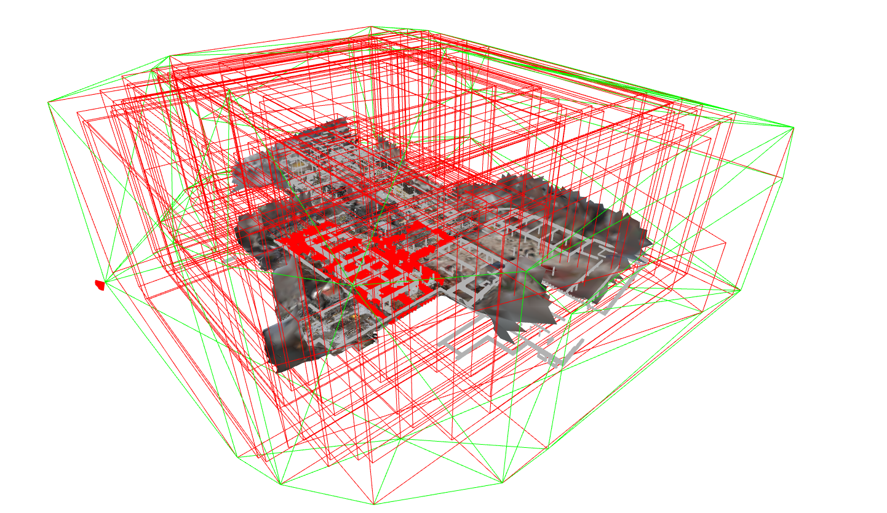
pcdboxes=[n.get_oriented_bounding_box() for n in pcdNodes ]
for box in pcdboxes:
box.color=[1,0,0]
imggeometries=[n.get_mesh_geometry(depth=2) for n in imgNodes ]
[img.paint_uniform_color([1,0,0]) for img in imggeometries]
meshbox=meshNode.get_oriented_bounding_box()
meshbox.color=[1,0,0]
lineset1=o3d.geometry.LineSet.create_from_triangle_mesh(week22.resource)
lineset1.paint_uniform_color([0,1,0])
LineSet with 135 lines.
Now it is good practice to already serialize these nodes in a RDF graph so we can rapidly load the nodes from the graphs in a next run. The facilitate the datastructure, we will store the generated graph in the same location.
graphPath=os.path.join(Path(os.getcwd()).parents[2],'test','testfiles','myAnalysisFolder','sessionGraph.ttl')
week22.to_graph(graphPath=graphPath,save=True)
print(week22.graph.serialize())
@prefix e57: <http://libe57.org#> .
@prefix openlabel: <https://www.asam.net/index.php?eID=dumpFile&t=f&f=3876&token=413e8c85031ae64cc35cf42d0768627514868b2f#> .
@prefix v4d: <https://w3id.org/v4d/core#> .
<file:///session_week22> a v4d:SessionNode ;
e57:cartesianBounds """[-52.61117755 125.37352753 2.92507553 165.88417048 -7.61820602
53.73831177]""" ;
e57:cartesianTransform """[[ 1. 0. 0. 33.33256501]
[ 0. 1. 0. 76.57464619]
[ 0. 0. 1. 22.28746892]
[ 0. 0. 0. 1. ]]""" ;
v4d:linkedSubjects "['file:///academiestraat_week_22_39', 'file:///academiestraat_week_22_38', 'file:///academiestraat_week_22_37', 'file:///academiestraat_week_22_36', 'file:///academiestraat_week_22_35', 'file:///academiestraat_week_22_34', 'file:///academiestraat_week_22_33', 'file:///academiestraat_week_22_31', 'file:///academiestraat_week_22_29', 'file:///academiestraat_week_22_28', 'file:///academiestraat_week_22_25', 'file:///academiestraat_week_22_24', 'file:///academiestraat_week_22_23', 'file:///academiestraat_week_22_22', 'file:///academiestraat_week_22_21', 'file:///academiestraat_week_22_20', 'file:///academiestraat_week_22_19', 'file:///academiestraat_week_22_18', 'file:///academiestraat_week_22_17', 'file:///academiestraat_week_22_16', 'file:///academiestraat_week_22_15', 'file:///academiestraat_week_22_14', 'file:///academiestraat_week_22_13', 'file:///academiestraat_week_22_12', 'file:///academiestraat_week_22_11', 'file:///academiestraat_week_22_10', 'file:///academiestraat_week_22_9', 'file:///academiestraat_week_22_8', 'file:///academiestraat_week_22_7', 'file:///academiestraat_week_22_6', 'file:///academiestraat_week_22_5', 'file:///academiestraat_week_22_3', 'file:///academiestraat_week_22_2', 'file:///academiestraat_week_22_1', 'file:///academiestraat_week_22b_13', 'file:///academiestraat_week_22b_12', 'file:///academiestraat_week_22b_11', 'file:///academiestraat_week_22b_10', 'file:///academiestraat_week_22b_9', 'file:///academiestraat_week_22b_8', 'file:///academiestraat_week_22b_7', 'file:///academiestraat_week_22b_6', 'file:///academiestraat_week_22b_5', 'file:///academiestraat_week_22b_3', 'file:///academiestraat_week_22b_2', 'file:///academiestraat_week_22b_1', 'file:///week22']" ;
v4d:name "session_week22" ;
v4d:orientedBounds """[[-44.86150601 163.75358449 66.14709087]
[134.36227138 147.52053539 72.20018649]
[-58.88269774 3.0278189 50.26458954]
[-41.65877793 170.94034329 -9.40797122]
[123.54380773 -6.01847141 -19.23737693]
[-55.67996966 10.21457769 -25.29047255]
[137.56499946 154.70729418 -3.3548756 ]
[120.34107965 -13.20523021 56.31768516]]""" ;
v4d:path "session_week22.ply" ;
openlabel:timestamp "2022-08-31T14:07:41" .
Reloading from graph
Similar to the BIM preprocessing, the above steps only have to be performed once. On reruns of the code or future analysis, we can initialize the same nodes from their serialized triples. This is significantly faster for smaller graphs.
sessionGraphPath=os.path.join(Path(os.getcwd()).parents[2],'test','testfiles','myAnalysisFolder','sessionGraph.ttl')
week22=SessionNode(graphPath=sessionGraphPath,getResource=True)
#get resourceGraphs
resourceGraph=Graph().parse(os.path.join(Path(os.getcwd()).parents[2],'test','testfiles','myAnalysisFolder','IMG','imgGraph.ttl'))
resourceGraph+=Graph().parse(os.path.join(Path(os.getcwd()).parents[2],'test','testfiles','myAnalysisFolder','MESH','meshGraph.ttl'))
resourceGraph+=Graph().parse(os.path.join(Path(os.getcwd()).parents[2],'test','testfiles','myAnalysisFolder','PCD','pcdGraph.ttl'))
week22.get_linked_nodes(resourceGraph=resourceGraph)
print(len(week22.linkedNodes))
43
{key:value for key, value in week22.linkedNodes[2].__dict__.items() if not key.startswith('__') and not callable(key)}
{'_e57Index': 2,
'pointCount': 11965832,
'e57XmlPath': None,
'_cartesianBounds': array([-11.26517105, 83.59384155, 23.63994217, 106.9466095 ,
1.22087526, 51.38877487]),
'_orientedBounds': None,
'_orientedBoundingBox': None,
'_subject': rdflib.term.URIRef('file:///academiestraat_week_22_37'),
'_graph': <Graph identifier=N5f27d492d00a49d4af61547c0720e4fc (<class 'rdflib.graph.Graph'>)>,
'_graphPath': None,
'_path': 'C:\\Users\\u0094523\\Documents\\week 22 lidar_CC.e57',
'_name': 'academiestraat week 22 37',
'_timestamp': '2022-08-31T14:07:41',
'_resource': None,
'_cartesianTransform': array([[ 4.06433852e-01, 9.13346423e-01, 2.46948508e-02,
2.95436743e+01],
[-9.13380668e-01, 4.06844203e-01, -1.46133214e-02,
6.62387305e+01],
[-2.33939817e-02, -1.66164508e-02, 9.99588223e-01,
4.85315968e+00],
[ 0.00000000e+00, 0.00000000e+00, 0.00000000e+00,
1.00000000e+00]]),
'type': 'https://w3id.org/v4d/core#PointCloudNode'}
Theoretical visibility week 22
To assess the coverage of each BIM object \(n_i \in N\), one first needs to determine the theoretical visibility per object \(c_i\). The theoretical visibility \(v_i \in \bold{V}\) per object is defined as the portion of the boundary surface area that does not collide with other BIM geometries. To this end, a point cloud per object \(P_i \in \) is sampled with a resolution of \(0.1m\) after which the proximity of these points to the remaining BIM objects \(N \backslash n_i\) is evaluated.
Compute theoretical visibility \(v_i\) of BIMNodes
First, we gather the relevant reference and target geometries we wish to sample
bimGeometries=[n.resource for n in BIMNodes if n.resource]
print(len(bimGeometries))
ifcBeamNodes=[n for n in ifcBeamNodes if n.resource]
ifcBeamGeometries=[n.resource for n in ifcBeamNodes]
print(len(ifcBeamGeometries))
ifcColumnNodes=[n for n in ifcColumnNodes if n.resource]
ifcColumnGeometries=[n.resource for n in ifcColumnNodes]
print(len(ifcColumnGeometries))
3525
417
217
Next, we sample the visibile point clouds on the ifcBeam elements. The result is a set of point clouds and the percentage of the surface area that does not collide with other geometries.
ifcBeamPointClouds, ifcBeamPercentages=gmu.create_visible_point_cloud_from_meshes(geometries=ifcBeamGeometries,references=bimGeometries,resolution=0.1)
print(np.average(np.asarray(ifcBeamPercentages)))
0.33598800133307477
for i,n in enumerate(ifcBeamNodes):
n.theoreticalVisibility=ifcBeamPercentages[i]
n.visibilityPointCloud=ifcBeamPointClouds[i]
Fig.5: Example of filtered invisible points between overlapping mesh geometries (left) on IfcColumns and (right) on two adjacent IfcSlabs.

NOTE: IfcBeam objects have a relavtively low theoretical visibility (avg. 33.7%). This is unsuprising as structural elements are generally among the most occluded elements, even in an IFC with only structural elements.
ifcColumnPointClouds, ifcColumnPercentages=gmu.create_visible_point_cloud_from_meshes(geometries=ifcColumnGeometries,references=bimGeometries,resolution=0.1)
print(np.average(np.asarray(ifcColumnPercentages)))
0.47724370256813303
for i,n in enumerate(ifcColumnNodes):
n.theoreticalVisibility=ifcColumnPercentages[i]
n.visibilityPointCloud=ifcColumnPointClouds[i]
The theoretical visibility for IfcColumns is significantly higher due to the foundations in the BIM (Fig.6).
Fig.6: Overview of the visible sampled IfcBeam (avg. 33.7% visibility) and IfcColumn (avg. 47.8% visibility) point clouds.
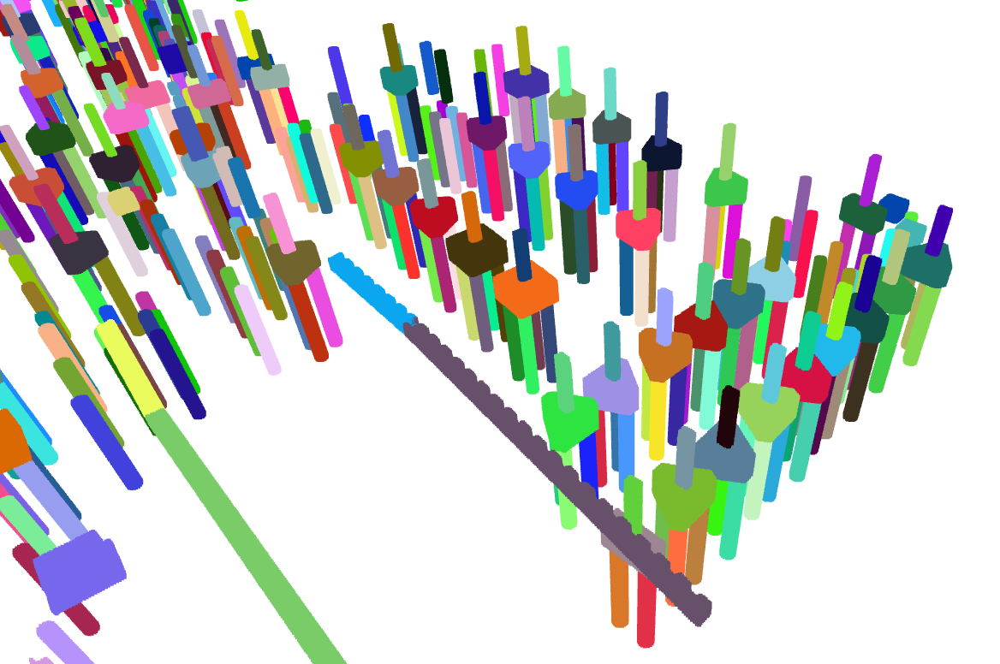
Discard irrelevant or unobserved resourceNodes and bimNodes
Before evaluating the geometries, we can optimize the computational process by filtering the inputs based on three criteria.
NOTE: Most of these spatial filters can be purely performed based on metadata, and are therefore very efficient.
(1) Discard BIMNodes with a low theoretical visibility
Objects with a low theoretical visibility \(v_i\leq 0.1\) should be discarded as these cannot be reliably observed. However, this is tricky since the thereotical visibility of the objects change during the construction process. It is therefore advised that the user querries the BIMNodes to match the project status i.e. querring on architecturally finished models in the strucural phase will heavily affect the theoretical visibility of the structural elements. Or not including ifc files or building storeys that weren’t started yet.
targetBimNodes=ifcBeamNodes
targetBimNodes+=ifcColumnNodes
print(len(targetBimNodes))
visibleBIMNodes=[n for n in targetBimNodes if n.theoreticalVisibility >=0.1]
print(len(visibleBIMNodes))
invisibleBIMNodes=[n for n in targetBimNodes if n.theoreticalVisibility <0.1]
print(len(invisibleBIMNodes))
634
565
69
Analysis 1 effectively reduces the BIMNode inputs by avg. 10% for both ifcClasses.
However, this theoretical visibility is not unambiguous since (1) objects that aren’t built can cause theoretical ooclusions, (2) the BIM database might contain some container geometries for elements such as beams and (3) some modeling mistakes or duplicates negatively impact the theoretical visibility (Fig.7).
visibleBIMGeometries=[n.resource for n in visibleBIMNodes]
visible=gmu.join_geometries(visibleBIMGeometries)
visibleLineset=o3d.geometry.LineSet.create_from_triangle_mesh(visible).paint_uniform_color([0,1,0])
invisbleBIMGeometries=[n.resource for n in invisibleBIMNodes]
invisible=gmu.join_geometries(invisbleBIMGeometries)
invisibleLineset=o3d.geometry.LineSet.create_from_triangle_mesh(invisible).paint_uniform_color([1,0,0])
referenceGeometries=[n.resource for n in BIMNodes]
reference=gmu.join_geometries(referenceGeometries)
referenceLineset=o3d.geometry.LineSet.create_from_triangle_mesh(reference)
o3d.visualization.draw_geometries([visibleLineset,invisibleLineset,referenceLineset,referencePcd])
[Open3D WARNING] GLFW Error: WGL: Failed to make context current: De ingang is ongeldig.
[Open3D WARNING] GLFW Error: WGL: Failed to make context current: De ingang is ongeldig.
[Open3D WARNING] GLFW Error: WGL: Failed to make context current: De aangevraagde overdrachtsbewerking wordt niet ondersteund.
[Open3D WARNING] GLFW Error: WGL: Failed to make context current: De aangevraagde overdrachtsbewerking wordt niet ondersteund.
[Open3D WARNING] GLFW Error: WGL: Failed to make context current: De ingang is ongeldig.
[Open3D WARNING] GLFW Error: WGL: Failed to make context current: De aangevraagde overdrachtsbewerking wordt niet ondersteund.
Fig.7: Overview of the theoretical visibility errors (IfcBeam,IfcColumn): (Green) Nodes with \(v_i>geq t_v\), (red) Nodes with \(v_i\leq t_v\) and (black) referenceNodes. 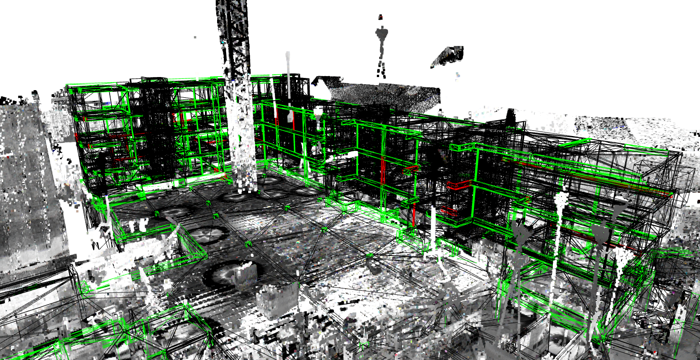
(2) Check which BIM geometries fall within the session node
Objects that are not contained within the session geometries bounding box or lie at the boundary of the bounding box edge can be left out of the calculations.
print(len(visibleBIMNodes))
visibleBIMGeometries=[n.resource for n in visibleBIMNodes]
indices=gmu.get_mesh_inliers(visibleBIMNodes,week22.resource)
visibleBIMNodes=[n for i,n in enumerate(visibleBIMNodes) if i in indices]
print(len(visibleBIMNodes))
565
565
Analysis 2 reveals that all the target BIMNodes in fact fall within scope of the session. This is mostly due to the photogrammetric mesh that spans the entire project.
(3) Check which resources actually see the target BIM objects
Images, point clouds or meshes that don’t in fact observe an object, or observe it merely at the very edge of their bounding box, can be ignored.
print(len(week22.linkedNodes))
testBoxes=[n.get_oriented_bounding_box() for n in visibleBIMNodes]
boxes=[n.get_oriented_bounding_box() for n in week22.linkedNodes]
relevantResourceNodes=[]
for i, b in enumerate(boxes):
if gmu.get_box_inliers(sourceBox=b, testBoxes=testBoxes,t_d=-2) is not None:
relevantResourceNodes.append(week22.linkedNodes[i])
print(len(relevantResourceNodes))
47
47
Analysis 3 reveals that all resources at least see some of the BIMNodes. As such, no resources can be discarded. This again is unsurprising as the beam and colums are spread throughout the project.
NOTE: In this case, two of the visibility checks did not reduce any resources or bimNodes. However, when dealing with larger projects or specific zones, immense computational advantages are to be gained while the entire analysis only takes about 3s to evaluate over 500 BIM elements and 736 resources representing over 13Gb of data.
Import geometries week 22
#resourceGeometries=[n.get_resource() for n in relevantResourceNodes]
This step is the slowest and most RAM demanding step at the actual data has to be loaded. If left unattended, the above single-thread process would take around 20min and 25Gb of RAM to load in the 46 points clouds, 1 mesh and some 700 images.
Three key optimizations are therefore impletemented:
(1) Schedule imports as multiple processes: By parallel importing and processing the data, we can speed up the import around 6 times given 8 cores. o3d classes cannot be pickled on Windows causing the actual transfer from e57 to o3d to run on a single core. This is overcome by working only with np.arrays which speed up the entire process to 1.56min for 45 point clouds (10M points each) on a normal laptop.
week22.get_linked_resources_multiprocessing(percentage=0.5)
[PointCloud with 6022116 points.,
PointCloud with 6045451 points.,
PointCloud with 5982916 points.,
PointCloud with 6027025 points.,
PointCloud with 6084855 points.,
PointCloud with 6001275 points.,
PointCloud with 6006175 points.,
PointCloud with 6027025 points.,
PointCloud with 5982916 points.,
PointCloud with 6006175 points.,
PointCloud with 5996376 points.,
PointCloud with 5996376 points.,
PointCloud with 5991480 points.,
PointCloud with 6022116 points.,
PointCloud with 5991480 points.,
PointCloud with 5968249 points.,
PointCloud with 5967027 points.,
PointCloud with 6035620 points.,
PointCloud with 6027025 points.,
PointCloud with 6006175 points.,
PointCloud with 6022116 points.,
PointCloud with 5967027 points.,
PointCloud with 5991480 points.,
PointCloud with 6066369 points.,
PointCloud with 5982916 points.,
PointCloud with 6007401 points.,
PointCloud with 6027025 points.,
PointCloud with 6022116 points.,
PointCloud with 6012304 points.,
PointCloud with 5987809 points.,
PointCloud with 6006175 points.,
PointCloud with 6022116 points.,
PointCloud with 6007401 points.,
PointCloud with 5991480 points.,
PointCloud with 5987809 points.,
PointCloud with 5991480 points.,
PointCloud with 6035620 points.,
PointCloud with 6056521 points.,
PointCloud with 6017209 points.,
PointCloud with 5982916 points.,
PointCloud with 6012304 points.,
PointCloud with 6007401 points.,
None]
(2) Store data out of core: We can create a backup of the downsampled data on drive and temporarily discard resources we don’t need to free up computational resources
folder=os.path.join(Path(os.getcwd()).parents[2],'test','testfiles','myAnalysisFolder','resources')
if not os.path.exists(folder):
os.mkdir(folder)
week22.save_linked_resources(folder)
print(week22.linkedNodes[0].path)
d:\Scan-to-BIM repository\geomapi\test\testfiles\myAnalysisFolder\resources\academiestraat week 22 39.pcd
(3) Downsample and discard the data: By downsampling and discarding the data, and only storing in memory the downsampled data for our analyis, we can significantly reduce the memory demands for the application.
for n in week22:
del n.resource
Compute Percentage-of-Completion week 22
Once the actual resources and BIMNodes, that are valid for the analysis, have been determined, we can asses the built status of each object.
To this end, we compute the Euclidean distance between the geometries in the session and the BIMNodes.
First, we sample all resources given a 0.1m resolution.
pcds=[n.resource for n in week22.linkedNodes if 'PointCloud' in str(type(n.resource))]
meshes=[n.resource for n in week22.linkedNodes if 'TriangleMesh' in str(type(n.resource))]
resolution=0.1
for mesh in meshes:
area=mesh.get_surface_area()
number_of_points=int(area/(resolution*resolution))
pcds.append(mesh.sample_points_uniformly(number_of_points))
print(len(pcds))
42
referencePcd=gmu.join_geometries(pcds)
referencePcd=referencePcd.voxel_down_sample(resolution)
print(len(referencePcd.points))
2611051
Next, we determine the percentage of inliers for each BIMGeometry compared to the reference point clouds
visibleBIMGeometries=[n.resource for n in visibleBIMNodes]
percentages=gmu.determine_percentage_of_coverage(sources=visibleBIMGeometries,reference=referencePcd,threshold=resolution)
print(len(percentages))
print(np.average(np.asarray(percentages)))
565
0.14618431693127287
On average the observed percentage of the objects is 14.6%, which is rather low. Finally, the observed percentage per object is compared to its theoretical visibility to asses whether an object is constructed or not given a threshold \(t_v\).
PoC=[None]*len(visibleBIMNodes)
for i, n in enumerate(visibleBIMNodes):
PoC[i]=percentages[i]/n.theoreticalVisibility
n.PoC=PoC[i]
print(np.average(np.asarray(PoC)))
0.39664788858215816
Which reveals that the Percentage-of-Completion, i.e. the ratio of the observed surface area over the theoretically visibility is on average 39.6%.
with \(t_v\) set to 50% so if atleast half an objects’ visible surface is seen, it is considered built.
constructedBIMGeometries=[n.resource.paint_uniform_color([0,1,0]) for n in visibleBIMNodes if n.PoC>=0.5]
print(len(constructedBIMGeometries))
unconstructedBIMGeometries=[n.resource for n in visibleBIMNodes if n.PoC<0.5]
print(len(unconstructedBIMGeometries))
invisibleBIMGeometries=[n.resource.paint_uniform_color([1,0,0]) for n in visibleBIMNodes if n.theoreticalVisibility<=0.1]
print(len(invisibleBIMGeometries))
126
439
0
|invisibleBIMGeometries| is obviously 0 as these were filtered out before the analysis started.
constructed=gmu.join_geometries(constructedBIMGeometries)
unconstructed=gmu.join_geometries(unconstructedBIMGeometries)
o3d.visualization.draw_geometries([constructed,unconstructed,referencePcd])
[Open3D WARNING] GLFW Error: WGL: Failed to make context current: De ingang is ongeldig.
Fig.8: Overview of the construction state of the BIM Elements(ifcBeam,ifcColumn) (avg.39.6% PoC): (Green) Constructed elements with \(PoC\geq t_v\) (grey) Unconstructed/unseen elements with \(PoC\leq t_v\) 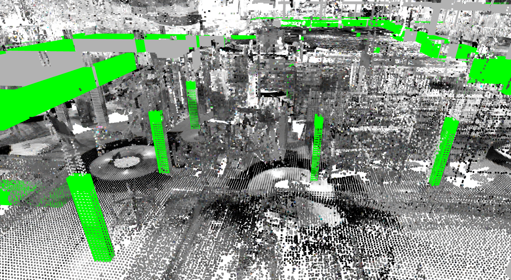
However, similar to the theoretical visibility, there are some shortcommings to this method. (1) Nearby constructed objects will increase point inliers on the object, (2) noise, ghosting and clutter will increase point inliers, (3) the point inliers do not necesserily indicate the proper built state since formwork will also show significant point inliers and (4) occlusions cause significant false negatives.
lineset1=o3d.geometry.LineSet.create_from_triangle_mesh(constructed)
lineset1.paint_uniform_color([0,1,0])
o3d.visualization.draw_geometries([lineset1,unconstructed,referencePcd])
[Open3D WARNING] GLFW Error: WGL: Failed to make context current: De ingang is ongeldig.
[Open3D WARNING] GLFW Error: WGL: Failed to make context current: De ingang is ongeldig.
[Open3D WARNING] GLFW Error: WGL: Failed to make context current: De ingang is ongeldig.
[Open3D WARNING] GLFW Error: WGL: Failed to make context current: De ingang is ongeldig.
[Open3D WARNING] GLFW Error: WGL: Failed to make context current: De aangevraagde overdrachtsbewerking wordt niet ondersteund.
[Open3D WARNING] GLFW Error: WGL: Failed to make context current: De aangevraagde overdrachtsbewerking wordt niet ondersteund.
Fig.9: Overview of the Poc (inlier method) shortcommings: Example outliers due to noise, nearby constructed elements and auxiliry structures. 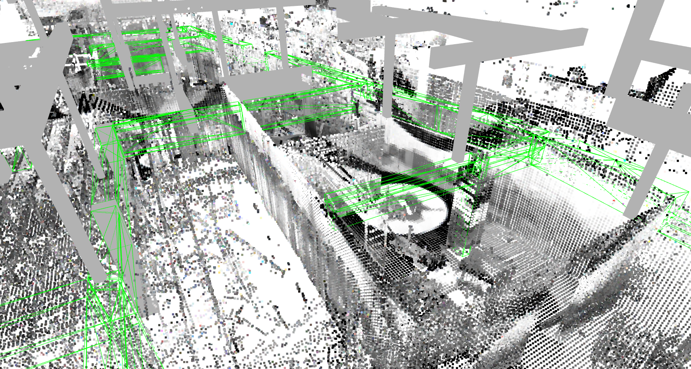
Serialize results week 22
Dispite some shortcommings, the majority of 126 of the 565 were correctly identified as being built. To build a reliable progress monitoring tool, one should be able to store the PoC results of week 22 and reuse the observations in the week 34 analysis.
To this end, we serialize the results in an analysis graph. Concretely, the PoC, theoretical visibility and used parameters are used per object
analysisNodes=[]
for node in visibleBIMNodes:
analysisNodes.append(BIMNode(subject=node.subject,
percentageOfCompletion=node.PoC,
theoreticalVisibility=node.theoreticalVisibility,
isDerivedFromGeometry=week22.subject,
offsetDistanceCalculation=resolution,
analysisTimestamp=week22.timestamp))
print(analysisNodes[0].to_graph().serialize())
@prefix omg: <https://w3id.org/omg#> .
@prefix v4d: <https://w3id.org/v4d/core#> .
@prefix xsd: <http://www.w3.org/2001/XMLSchema#> .
<file:///282_SF_f2_Foundation-Rectangular_40_130_998270_3tZF_AuZDAYQfVfU1ic86_> a v4d:BIMNode ;
omg:isDerivedFromGeometry "file:///session_week22" ;
v4d:analysisTimestamp "2022-08-31T14:07:41" ;
v4d:offsetDistanceCalculation "0.1"^^xsd:float ;
v4d:percentageOfCompletion "0.0"^^xsd:float ;
v4d:theoreticalVisibility "0.2384180790960452"^^xsd:float .
analysisGraphPath=os.path.join(Path(os.getcwd()).parents[2],'test','testfiles','myAnalysisFolder','week22analysisGraph.ttl')
tl.nodes_to_graph(analysisNodes,graphPath=analysisGraphPath,save=True)
<Graph identifier=N3cb94120e2f94d23b14216fd5bd4d6b3 (<class 'rdflib.graph.Graph'>)>
Analysis week 34
The progress estimation in week 34 slightly differs from week 22. In week 34, we do not only have a new set of measurements that we can process. We also have the analysis of week 22 on which we can built. For instance, the theoretical visibility of the BIMNodes is the same, since both measurement epochs are part of the same structure Phase.
Preprocess measurements week 34
First, we preprocess the measurements of week 34 as a sessionNode much like week 22.
E57 POINT CLOUDS: These nodes from the e57 header instead of actually importing the data so a first spatial analysis can be conducted effeciently
e57Path=os.path.join("C:\\Users\\u0094523\\Documents\\week 34\\week34_lidar_georef.e57")
pcdNodes=tl.e57header_to_nodes(e57Path)
print(len(pcdNodes))
#serialize nodes
folder=os.path.join(Path(os.getcwd()).parents[2],'test','testfiles','myAnalysisFolder34','PCD')
if not os.path.exists(folder):
os.mkdir(folder)
graphPath=os.path.join(Path(os.getcwd()).parents[2],'test','testfiles','myAnalysisFolder34','PCD','pcdGraph.ttl')
tl.nodes_to_graph(nodelist=pcdNodes,graphPath=graphPath,save=True)
{key:value for key, value in pcdNodes[0].__dict__.items() if not key.startswith('__') and not callable(key)}
19
{'_e57Index': 0,
'pointCount': 6414743,
'e57XmlPath': None,
'_cartesianBounds': None,
'_orientedBounds': None,
'_orientedBoundingBox': None,
'_subject': rdflib.term.URIRef('file:///academiestraat_22_week_34_1'),
'_graph': <Graph identifier=N21c459e5807745f8a4c94d62c96a9842 (<class 'rdflib.graph.Graph'>)>,
'_graphPath': 'd:\\Scan-to-BIM repository\\geomapi\\test\\testfiles\\myAnalysisFolder34\\PCD\\pcdGraph.ttl',
'_path': 'C:\\Users\\u0094523\\Documents\\week 34\\week34_lidar_georef.e57',
'_name': 'academiestraat 22 week 34 1',
'_timestamp': '2022-09-08T09:01:15',
'_resource': None,
'_cartesianTransform': array([[-1.23740218e-01, 9.92220428e-01, 1.36740747e-02,
3.19596119e+01],
[-9.92016441e-01, -1.24029090e-01, 2.28071432e-02,
9.12885202e+01],
[ 2.43256965e-02, -1.07427460e-02, 9.99646364e-01,
4.76666118e+00],
[ 0.00000000e+00, 0.00000000e+00, 0.00000000e+00,
1.00000000e+00]])}
Photogrammetric mesh: Mesh files have no metadata headers so the data has to be loaded by GEOMAPI. However, to save memory (and to illustrate the non-data functionality), we will discard the data as soon as the relevant metadata is extracted.
meshPath=os.path.join("C:\\Users\\u0094523\\Documents\\week 34\\week34.obj")
meshNode=MeshNode(path=meshPath,getResource=True)
#serialize nodes
folder=os.path.join(Path(os.getcwd()).parents[2],'test','testfiles','myAnalysisFolder34','MESH')
if not os.path.exists(folder):
os.mkdir(folder)
graphPath=os.path.join(Path(os.getcwd()).parents[2],'test','testfiles','myAnalysisFolder34','MESH','meshGraph.ttl')
meshNode.to_graph(graphPath=graphPath,save=True)
{key:value for key, value in meshNode.__dict__.items() if not key.startswith('__') and not callable(key)}
{'pointCount': 4190251,
'faceCount': 7685546,
'_cartesianBounds': array([-21.60602379, 66.36610413, 42.44333649, 124.37586212,
-2.55043411, 18.72565842]),
'_orientedBounds': array([[ 3.09926970e+00, 1.52927627e+02, 2.09918935e+01],
[ 8.99627806e+01, 1.10374726e+02, 2.21682241e+01],
[-3.75260534e+01, 6.98601741e+01, 1.59738496e+01],
[ 3.87313645e+00, 1.53892566e+02, -1.24658549e+00],
[ 5.01113242e+01, 2.82722128e+01, -5.08829878e+00],
[-3.67521867e+01, 7.08251137e+01, -6.26462934e+00],
[ 9.07366473e+01, 1.11339665e+02, -7.02549240e-02],
[ 4.93374575e+01, 2.73072732e+01, 1.71501802e+01]]),
'_orientedBoundingBox': OrientedBoundingBox: center: (26.6053, 90.5999, 7.9518), extent: 96.7337, 92.6056, 22.2729),
'_subject': rdflib.term.URIRef('file:///week34'),
'_graph': <Graph identifier=Ne1fea37da8794b198e678d92a6260dd6 (<class 'rdflib.graph.Graph'>)>,
'_graphPath': 'd:\\Scan-to-BIM repository\\geomapi\\test\\testfiles\\myAnalysisFolder34\\MESH\\meshGraph.ttl',
'_path': 'C:\\Users\\u0094523\\Documents\\week 34\\week34.obj',
'_name': 'week34',
'_timestamp': '2022-09-07T09:22:50',
'_resource': TriangleMesh with 4190251 points and 7685546 triangles.,
'_cartesianTransform': array([[ 1. , 0. , 0. , 13.07415467],
[ 0. , 1. , 0. , 78.13979001],
[ 0. , 0. , 1. , 5.22154457],
[ 0. , 0. , 0. , 1. ]])}
SessionNode
From the above nodes, a overarching session can be created. As such, 2 sessions are created, one for each meaurement epoch.
linkedNodes=pcdNodes + [meshNode]
week34=SessionNode(subject='session_week34', linkedNodes=linkedNodes)
print(len(week34.linkedNodes))
print(week34.subject)
20
file:///session_week34
week34.save_resource(os.path.join(Path(os.getcwd()).parents[2],'test','testfiles','myAnalysisFolder34'))
pcdboxes=[n.get_oriented_bounding_box() for n in pcdNodes ]
for box in pcdboxes:
box.color=[1,0,0]
meshbox=meshNode.get_oriented_bounding_box()
meshbox.color=[1,0,0]
lineset=o3d.geometry.LineSet.create_from_triangle_mesh(week34.resource)
lineset.paint_uniform_color([0,1,0])
o3d.visualization.draw_geometries(pcdboxes+[meshbox]+[lineset]+[meshNode.resource])
Fig.10: (red) orientedBoundingBoxes of the pcdNodes and the meshNode and (green) convex hull of the week 34 sessionNode. 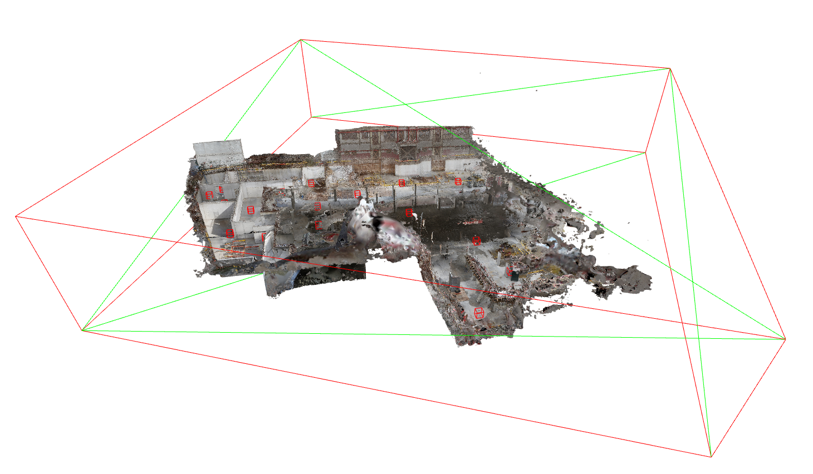
NOTE: This specific AUTODESK RECAP does not contain cartesianBounds information. As such, placeholder boundingbboxes are generated untill the actual data is loaded. In this case, the convex hull of the session is equal to the orientedBounding box of the mesh.
We can also store this convex hull as the sessionNode’s resource.
week34.save_resource(os.path.join(Path(os.getcwd()).parents[2],'test','testfiles','myAnalysisFolder34'))
True
Now it is good practice to already serialize these nodes in a RDF graph so we can rapidly load the nodes from the graphs in a next run. The facilitate the datastructure, we will store the generated graph in the same location.
graphPath=os.path.join(Path(os.getcwd()).parents[2],'test','testfiles','myAnalysisFolder34','sessionGraph.ttl')
week34.to_graph(graphPath=graphPath,save=True)
print(week34.graph.serialize())
@prefix e57: <http://libe57.org#> .
@prefix openlabel: <https://www.asam.net/index.php?eID=dumpFile&t=f&f=3876&token=413e8c85031ae64cc35cf42d0768627514868b2f#> .
@prefix v4d: <https://w3id.org/v4d/core#> .
<file:///session_week34> a v4d:SessionNode ;
e57:cartesianBounds """[-37.52605343 90.73664735 27.30727318 153.89256624 -6.26462934
22.16822407]""" ;
e57:cartesianTransform """[[ 1. 0. 0. 5.71003444]
[ 0. 1. 0. 84.3190585 ]
[ 0. 0. 1. 5.43533838]
[ 0. 0. 0. 1. ]]""" ;
v4d:linkedSubjects "['file:///academiestraat_22_week_34_1', 'file:///academiestraat_22_week_34_2', 'file:///academiestraat_22_week_34_4', 'file:///academiestraat_22_week_34_5', 'file:///academiestraat_22_week_34_6', 'file:///academiestraat_22_week_34_7', 'file:///academiestraat_22_week_34_8', 'file:///academiestraat_22_week_34_9', 'file:///academiestraat_22_week_34_10', 'file:///academiestraat_22_week_34_11', 'file:///academiestraat_22_week_34_12', 'file:///academiestraat_22_week_34_13', 'file:///academiestraat_22_week_34_16', 'file:///academiestraat_22_week_34_19', 'file:///academiestraat_22_week_34_20', 'file:///academiestraat_22_week_34_21', 'file:///academiestraat_22_week_34_22', 'file:///academiestraat_22_week_34_23', 'file:///academiestraat_22_week_34_24', 'file:///week34']" ;
v4d:name "session_week34" ;
v4d:orientedBounds """[[ 3.09926970e+00 1.52927627e+02 2.09918935e+01]
[ 8.99627806e+01 1.10374726e+02 2.21682241e+01]
[-3.75260534e+01 6.98601741e+01 1.59738496e+01]
[ 3.87313645e+00 1.53892566e+02 -1.24658549e+00]
[ 5.01113242e+01 2.82722128e+01 -5.08829878e+00]
[-3.67521867e+01 7.08251137e+01 -6.26462934e+00]
[ 9.07366473e+01 1.11339665e+02 -7.02549240e-02]
[ 4.93374575e+01 2.73072732e+01 1.71501802e+01]]""" ;
v4d:path "session_week34.ply" ;
openlabel:timestamp "2022-09-08T09:01:15" .
Reloading from graph
Similar to the BIM preprocessing, the above steps only have to be performed once. On reruns of the code or future analysis, we can initialize the same nodes from their serialized triples. This is significantly faster for smaller graphs.
sessionGraphPath=os.path.join(Path(os.getcwd()).parents[2],'test','testfiles','myAnalysisFolder34','sessionGraph.ttl')
week34=SessionNode(graphPath=sessionGraphPath,getResource=True)
#get resourceGraphs
resourceGraph=Graph().parse(os.path.join(Path(os.getcwd()).parents[2],'test','testfiles','myAnalysisFolder34','MESH','meshGraph.ttl'))
resourceGraph+=Graph().parse(os.path.join(Path(os.getcwd()).parents[2],'test','testfiles','myAnalysisFolder34','PCD','pcdGraph.ttl'))
week34.get_linked_nodes(resourceGraph=resourceGraph)
print(len(week34.linkedNodes))
20
{key:value for key, value in week34.linkedNodes[2].__dict__.items() if not key.startswith('__') and not callable(key)}
{'_e57Index': 2,
'pointCount': 11965832,
'e57XmlPath': None,
'_cartesianBounds': array([-11.26517105, 83.59384155, 23.63994217, 106.9466095 ,
1.22087526, 51.38877487]),
'_orientedBounds': None,
'_orientedBoundingBox': None,
'_subject': rdflib.term.URIRef('file:///academiestraat_week_22_37'),
'_graph': <Graph identifier=N996a20535b4b4a5a9cf2fdfacd926e74 (<class 'rdflib.graph.Graph'>)>,
'_graphPath': None,
'_path': 'C:\\Users\\u0094523\\Documents\\week 22 lidar_CC.e57',
'_name': 'academiestraat week 22 37',
'_timestamp': '2022-08-31T14:07:41',
'_resource': None,
'_cartesianTransform': array([[ 4.06433852e-01, 9.13346423e-01, 2.46948508e-02,
2.95436743e+01],
[-9.13380668e-01, 4.06844203e-01, -1.46133214e-02,
6.62387305e+01],
[-2.33939817e-02, -1.66164508e-02, 9.99588223e-01,
4.85315968e+00],
[ 0.00000000e+00, 0.00000000e+00, 0.00000000e+00,
1.00000000e+00]]),
'type': 'https://w3id.org/v4d/core#PointCloudNode'}
Theoretical visibility week 34
We assume the theoretical visibility to be unchanged from week 22. As such, we can just reuse the bimGraph and combine it with the analysisGraph from week 22.
bimGraphPath=os.path.join(Path(os.getcwd()).parents[2],'test','testfiles','myAnalysisFolder','BIM','bimGraph.ttl')
bimGraph=Graph().parse(bimGraphPath)
print(len(bimGraph))
analysisGraph=Graph().parse(os.path.join(Path(os.getcwd()).parents[2],'test','testfiles','myAnalysisFolder','week22analysisGraph.ttl'))
print(len(analysisGraph))
42336
3390
To reduce the number of parsed elements (up from 3528), we retain only the subjects with ifcBeam and ifcColumn classnames which are contained within the intersection of both graphs.
intersectionGraph=ut.get_graph_intersection([bimGraph,analysisGraph])
print(len(intersectionGraph))
9605
In addition to the intersectionGraph, the bimGraphPath should also be provided to complete the resource paths.
visibleBIMNodes=tl.graph_to_nodes(graph=intersectionGraph,graphPath=bimGraphPath,getResource=True)
print(len(visibleBIMNodes))
{key:value for key, value in visibleBIMNodes[2].__dict__.items() if not key.startswith('__') and not callable(key)}
565
{'_ifcPath': 'd:\\Scan-to-BIM repository\\geomapi\\test\\testfiles\\myAnalysisFolder\\IFC\\Academiestraat_parking.ifc',
'_globalId': '3ImCzVI6P6UeXNJl2tafTA',
'_cartesianBounds': array([32.83716386, 33.07297889, 93.90500251, 95.40825674, 6.99 ,
7.49 ]),
'_orientedBounds': array([[33.07297889, 95.40347025, 6.99 ],
[33.03710657, 93.90500251, 6.99 ],
[33.07297889, 95.40347025, 7.49 ],
[32.87303617, 95.40825674, 6.99 ],
[32.83716386, 93.90978901, 7.49 ],
[32.87303617, 95.40825674, 7.49 ],
[32.83716386, 93.90978901, 6.99 ],
[33.03710657, 93.90500251, 7.49 ]]),
'_orientedBoundingBox': OrientedBoundingBox: center: (32.9551, 94.6566, 7.24), extent: 1.4989, 0.5, 0.2),
'_subject': rdflib.term.URIRef('file:///282_SF_f2_Rectangular_20_50_1032696_3ImCzVI6P6UeXNJl2tafTA'),
'_graph': <Graph identifier=Nae34111d44684290ac74c87646ff75c3 (<class 'rdflib.graph.Graph'>)>,
'_graphPath': 'd:\\Scan-to-BIM repository\\geomapi\\test\\testfiles\\myAnalysisFolder\\BIM\\bimGraph.ttl',
'_path': 'd:\\Scan-to-BIM repository\\geomapi\\test\\testfiles\\myAnalysisFolder\\BIM\\282_SF_f2_Rectangular_20_50_1032696_3ImCzVI6P6UeXNJl2tafTA.ply',
'_name': '282_SF_f2_Rectangular:20/50:1032696',
'_timestamp': '2022-08-24T09:33:45',
'_resource': TriangleMesh with 12 points and 12 triangles.,
'_cartesianTransform': array([[ 1. , 0. , 0. , 32.94909265],
[ 0. , 1. , 0. , 94.40688501],
[ 0. , 0. , 1. , 7.24 ],
[ 0. , 0. , 0. , 1. ]]),
'faceCount': 12,
'pointCount': 12,
'className': 'IfcBeam',
'percentageOfCompletion': 0.0,
'offsetDistanceCalculation': 0.1,
'isDerivedFromGeometry': 'file:///session_week22',
'theoreticalVisibility': 0.28448275862068967,
'analysisTimestamp': '2022-08-31T14:07:41',
'type': 'https://w3id.org/v4d/core#BIMNode'}
Import geometries week 34
In the analysis of week 22, no reduction was achieved by the preliminary checks on the remote sensing data. As such, we will forego these checks in week 34 since a similar effect is expected. This is confirmed by Fig.X where the bounding boxes cover the entire construction site.
week34.get_linked_resources_multiprocessing(percentage=0.5)
[PointCloud with 3207371 points.,
PointCloud with 3083122 points.,
PointCloud with 4399131 points.,
PointCloud with 2797306 points.,
PointCloud with 3068398 points.,
PointCloud with 3373537 points.,
PointCloud with 3595908 points.,
PointCloud with 3423975 points.,
PointCloud with 3476483 points.,
PointCloud with 3763683 points.,
PointCloud with 3546451 points.,
PointCloud with 4573729 points.,
PointCloud with 4764464 points.,
PointCloud with 3503286 points.,
PointCloud with 4602058 points.,
PointCloud with 2933539 points.,
PointCloud with 3455878 points.,
PointCloud with 3913517 points.,
PointCloud with 3207336 points.,
TriangleMesh with 4190251 points and 7685546 triangles.]
Compute Percentage-of-Completion week 34
Simimlar to week 22, we first calculate the Percentage-of-Completion solely based on the observations of week 34.
To this end, we compute the Euclidean distance between the geometries in the session and the BIMNodes.
First, we sample all resources given a 0.1m resolution.
pcds=[n.resource for n in week34.linkedNodes if 'PointCloud' in str(type(n.resource))]
meshes=[n.resource for n in week34.linkedNodes if 'TriangleMesh' in str(type(n.resource))]
resolution=0.1
for mesh in meshes:
area=mesh.get_surface_area()
number_of_points=int(area/(resolution*resolution))
pcds.append(mesh.sample_points_uniformly(number_of_points))
print(len(pcds))
20
referencePcd=gmu.join_geometries(pcds)
referencePcd=referencePcd.voxel_down_sample(resolution)
print(len(referencePcd.points))
1497147
Next, we determine the percentage of inliers for each BIMGeometry compared to the reference point clouds
targetBimGeometries=[n.resource for n in visibleBIMNodes]
percentages=gmu.determine_percentage_of_coverage(sources=targetBimGeometries,reference=referencePcd,threshold=resolution)
print(len(percentages))
print(np.average(np.asarray(percentages)))
565
0.12657436250950596
On average the observed percentage of the objects is 12.5%, which is in line with week 22 (14.5%). When compared to its theoretical visibility, we get the following result.
PoC=[None]*len(visibleBIMNodes)
for i, n in enumerate(visibleBIMNodes):
PoC[i]=percentages[i]/n.theoreticalVisibility
n.PoC=PoC[i]
print(np.average(np.asarray(PoC)))
0.3778340465226297
Which reveals that the Percentage-of-Completion (PoC), i.e. the ratio of the observed surface area over the theoretically visibility is on average 37.8%.
Note: the PoC can exceed 1.0 in some cases. This is due to
The search distance of the inliers, which can report false positives on hidden points that fall within the ditance treshhotl.
An underestimation of theoretical visibility as it was computed on the full model.
Overall, the PoC is similar to week 22. This does not impy no progress is to be reported. Instead, the PoC depends on the scope of the session and the work progression.
constructedBIMGeometries=[n.resource.paint_uniform_color([0,1,0]) for n in visibleBIMNodes if n.PoC>=0.5]
print(len(constructedBIMGeometries))
unconstructedBIMGeometries=[n.resource for n in visibleBIMNodes if n.PoC<0.5]
print(len(unconstructedBIMGeometries))
107
458
visible=gmu.join_geometries(constructedBIMGeometries)
invisible=gmu.join_geometries(unconstructedBIMGeometries)
o3d.visualization.draw_geometries([visible,invisible,referencePcd])
[Open3D WARNING] GLFW Error: WGL: Failed to make context current: De ingang is ongeldig.
Serialize results week 34
However, when serializing these results, it is revealed that only 136 of the 656 objects are constructed in week 34 in contrast to 143 objects in week22. This can have a multitude of reasons including (1) occluded elements by work progression, (2) remote sensing data taking in different locations and (3) noise and errors in the distance evaluation.
First, we serialize the results in a second analysis graph after which we will compare the progress between both weeks.
analysisNodes=[]
for node in visibleBIMNodes:
analysisNodes.append(BIMNode(subject=node.subject,
percentageOfCompletion=node.PoC,
theoreticalVisibility=node.theoreticalVisibility,
isDerivedFromGeometry=week34.subject,
offsetDistanceCalculation=resolution,
analysisTimestamp=week34.timestamp))
print(analysisNodes[0].to_graph().serialize())
@prefix omg: <https://w3id.org/omg#> .
@prefix v4d: <https://w3id.org/v4d/core#> .
@prefix xsd: <http://www.w3.org/2001/XMLSchema#> .
<file:///282_SC_f2_Rectangular_30_50#C40_50_967685_31ITCLLef6cxVKsJ1O6Z0P> a v4d:BIMNode ;
omg:isDerivedFromGeometry "file:///session_week34" ;
v4d:analysisTimestamp "2022-09-08T09:01:15" ;
v4d:offsetDistanceCalculation "0.1"^^xsd:float ;
v4d:percentageOfCompletion "2.136394069823051"^^xsd:float ;
v4d:theoreticalVisibility "0.3203125"^^xsd:float .
analysisGraphPath=os.path.join(Path(os.getcwd()).parents[2],'test','testfiles','myAnalysisFolder34','week34analysisGraph.ttl')
tl.nodes_to_graph(analysisNodes,graphPath=analysisGraphPath,save=True)
<Graph identifier=N1538a1baff2c4310a3279dc89c159bcd (<class 'rdflib.graph.Graph'>)>
Compare changes between week 22 and week 34
A crucial aspect of GEOMAPI is its ability to store and use analyses results in subsequent analysis. We already benefitted from the semantic web technologies by serializing the theoretical visibility, which lowered the computational cost for any future analysis. Now, we will also look whether the analysis results can be improved.
First, let’s determine the changes between both data sets. Ideally, all objects from week 22 are also constructed in week 34 and more. To this end, we querry both analysis graphs
analysisGraph22=Graph().parse(os.path.join(Path(os.getcwd()).parents[2],'test','testfiles','myAnalysisFolder','week22analysisGraph.ttl'))
analysisGraph34=Graph().parse(os.path.join(Path(os.getcwd()).parents[2],'test','testfiles','myAnalysisFolder34','week34analysisGraph.ttl'))
bimGraphPath=os.path.join(Path(os.getcwd()).parents[2],'test','testfiles','myAnalysisFolder','BIM','bimGraph.ttl')
bimGraph=Graph().parse(bimGraphPath)
v4d=rdflib.Namespace('https://w3id.org/v4d/core#')
intersectionGraph=analysisGraph22 & bimGraph
t_v=0.5
subjectsUnconstructed=[]
subjectsInWeek22=[]
subjectsInWeek22and34=[]
subjectsInWeek34=[]
for subject in intersectionGraph.subjects(RDF.type):
poc22 = analysisGraph22.value(subject=subject,predicate=v4d['percentageOfCompletion']).toPython()
poc34 = analysisGraph34.value(subject=subject,predicate=v4d['percentageOfCompletion']).toPython()
if poc22 <t_v and poc34 < t_v:
subjectsUnconstructed.append(subject)
if poc22 >=t_v and poc34 < t_v:
subjectsInWeek22.append(subject)
if poc22 >=t_v and poc34 >= t_v:
subjectsInWeek22and34.append(subject)
if poc22 <t_v and poc34 >= t_v:
subjectsInWeek34.append(subject)
print(len(subjectsUnconstructed))
print(len(subjectsInWeek22))
print(len(subjectsInWeek22and34))
print(len(subjectsInWeek34))
418
40
86
21
The above code shows the following results.
418 BIM Elements were not constructed in both weeks (Fig.X grey elements).
40 elements were found in week 22 but not in week 34. We will first assume that these elements are simply not recorded but indeed built as they are recorded in week 22.
86 elements were considered built in both weeks, showing a considerable overlap in documentation. NOTE, this should be lowered if possible to make the analysis more efficient.
21 new elements were considered built in week 34
intersectionGraph=ut.get_graph_intersection([bimGraph,analysisGraph22])
visibleBIMNodes=tl.graph_to_nodes(graph=intersectionGraph,graphPath=bimGraphPath,getResource=True)
print(len(visibleBIMNodes))
565
geometries=[]
for n in visibleBIMNodes:
if n.subject in subjectsUnconstructed and n.resource is not None:
geometries.append(n.resource)
if n.subject in subjectsInWeek22 and n.resource is not None:
geometries.append(n.resource.paint_uniform_color([1,0,0]))
if n.subject in subjectsInWeek22and34 and n.resource is not None:
geometries.append(n.resource.paint_uniform_color([1, 0.706, 0]))
if n.subject in subjectsInWeek34 and n.resource is not None:
geometries.append(n.resource.paint_uniform_color([0,1,0]))
geometries=gmu.join_geometries(geometries)
o3d.visualization.draw_geometries(geometries + [meshNode.resource])
[Open3D WARNING] GLFW Error: WGL: Failed to make context current: De aangevraagde overdrachtsbewerking wordt niet ondersteund.
Fig.11: Overview of the IfcBeam and IfcColumn progression in week 22 and 34. (grey) unconstructed elements in both week, (red) objects only observed in week 22, (yellow) objects observed in both weeks and (green) objects only observed in week 34.
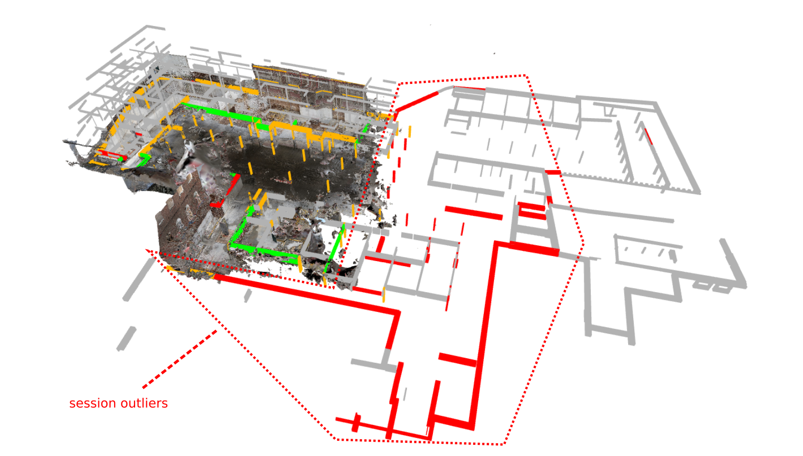 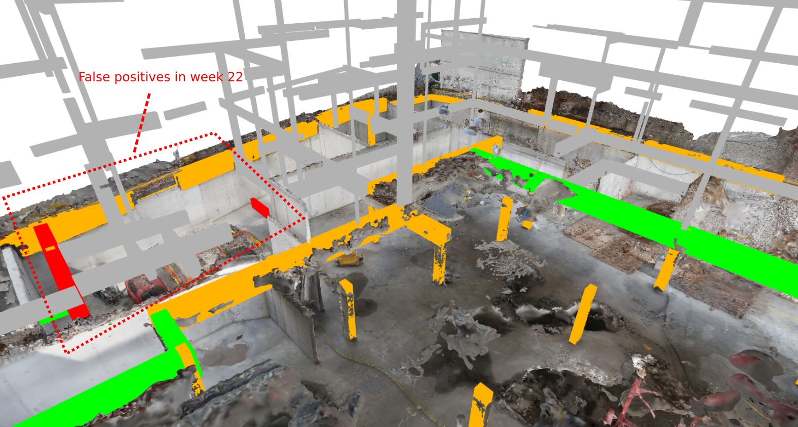 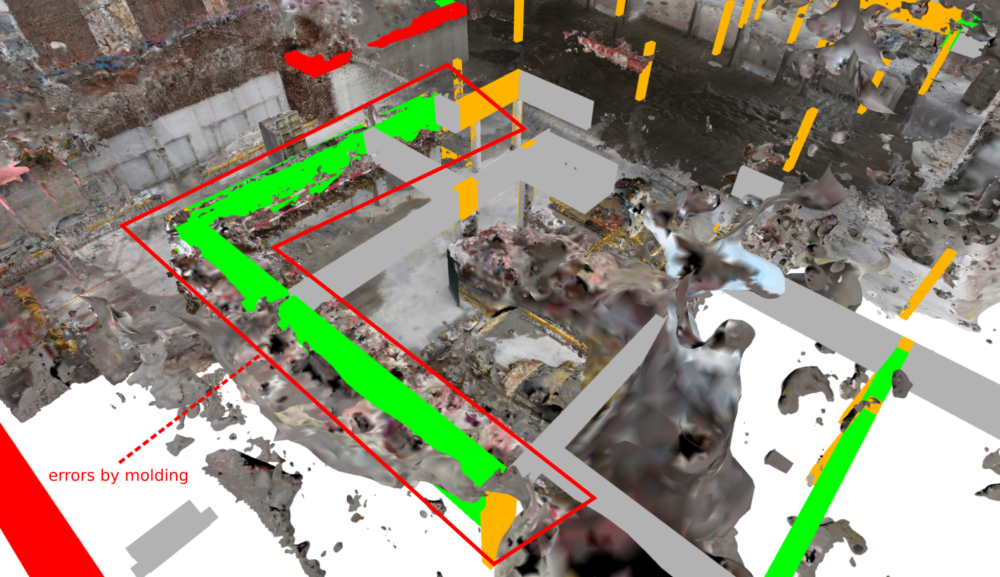 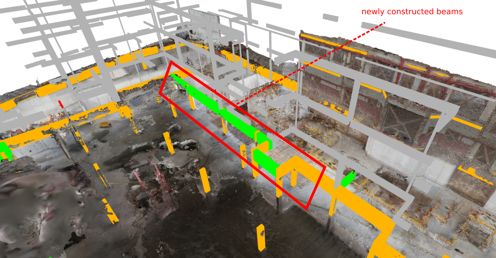{kind=link}
{kind=link}
{kind=link}
{kind=link}
Conclusion
In this testcase, we determined the work progress on beam and column elements in two measurement epochs using GEOMAPI functionality. The following conclusions can be drawn from the above tests.
GEOMAPI: Over 70 point clouds (>700M points), meshes and 2 IFC structure models are processed in under 6-10 minutes by smartly dealing with the objects metadata and parallel processing whereever possible. This shows a core strength of GEOMAPI that looks to facilitate big data remote sensing processing.
Storing results: With only a few commands, we stored both the analysis parameters and results in a standardised manner. By using Graphs to store metadata and analysis results, combining data from multiple sources has become very intuitive. This promotes accessibility of the results and also increases their longevity wich is a crucial problem in current analyses.
Construction site documentation: The progress estimation of both weeks showed that nearly 60% of the observed elements were documented in both weeks, which indicates a significant overlap in both measurement epochs. Since the documentation is the most costly step, and also computationally burdens downstream analyses, this should be lowered. Instead, site documentation should focus on only the parts that actually changed if possible.
Analysis: The proposed progress method, based on point inliers, gives a coarse approximation of which objects are built. However, some inherent errors are present. For instance, the PoC will overshoot the number of constructed elements due to noise, auxilary objects such as formwork and the search distance. The method will also undershoot for objects that are difficult observe.
Future work
Future work will focus on the development of a more inclusice PoC method, possibly also based on image detection [1]. The decision function will also be replaced with a more State-of-the-art machine learning method that looks are appearance descriptors instead of solely evaluating point inliers based on previous work (Bassier et al., 2019).
References
Cuypers, S., Bassier, M., & Vergauwen, M. (2021). Deep Learning on Construction Sites : A Case Study of Sparse Data Learning Techniques for Rebar Segmentation. Sensors, 1–20.
Bassier, M., Vincke, S., Mattheuwsen, L., De Lima Hernandez, R., Derdaele, J., & Vergauwen, M. (2019). Percentage of completion of in-situ cast concrete walls using point cloud data and bim. International Archives of the Photogrammetry, Remote Sensing and Spatial Information Sciences - ISPRS Archives, 42(5/W2), 21–28. https://doi.org/10.5194/isprs-archives-XLII-5-W2-21-2019